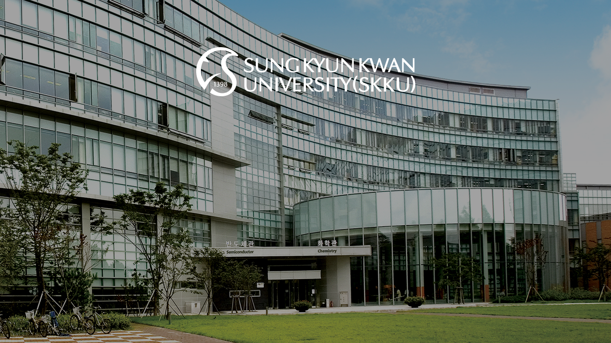

지원 문의
담당자 : 전민웅 연구원, jmo1401@g.skku.edu
주소 : 성균관대학교 자연과학캠퍼스 반도체관 400525호
TEL : 031-299-4659
연구분야
Processing in Memory (PIM) and Next-Generation Memory Systems
Computer Architecture (Processor, Memory, Cache, TLB, etc.)
Machine Learning, Deep Learning
System-level Design (ESL, High-level Synthesis)
전일제 대학원생 지원
등록금 지원 및 매월 일정액의 연구장려금 지원
쾌적한 연구 환경 지원
다양한 분야의 Project 참여 기회 제공
우리 연구실에서는...
인공지능 프로세서 아키텍처
프로세싱 인 메모리 (Processing-in-Memory) 및 차세대 메모리 시스템
고성능 광대역 반도체 연결 구조
에 관심 있는 학생을 환영합니다